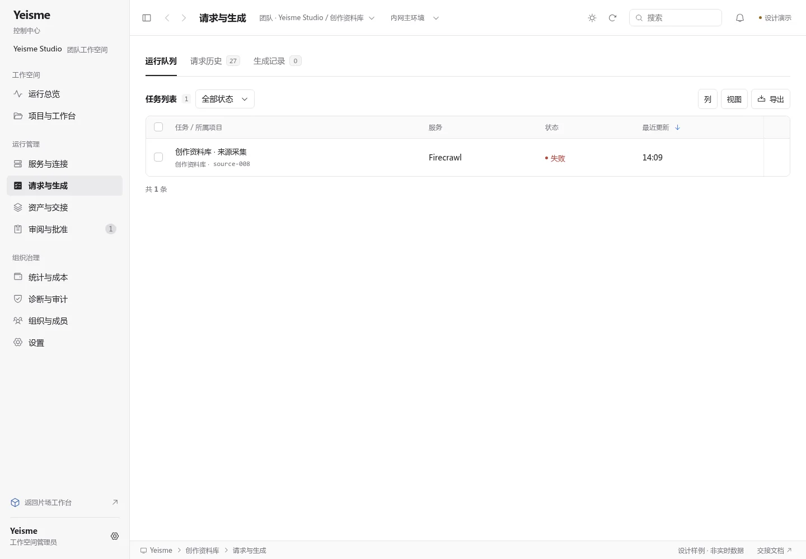
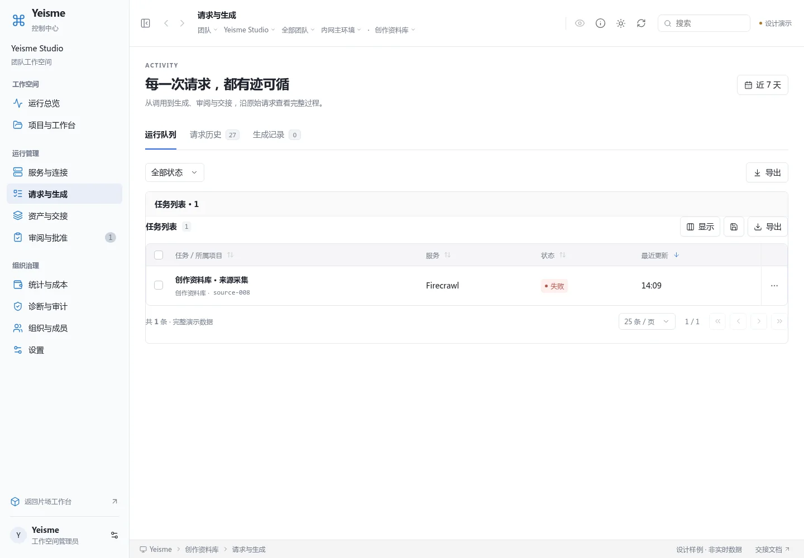
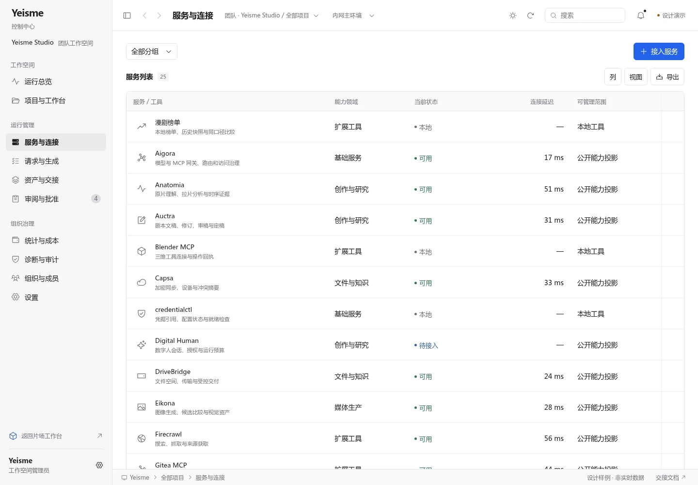
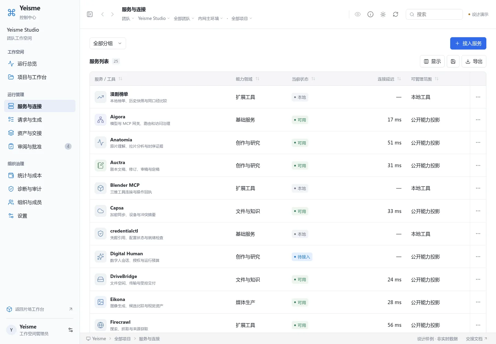
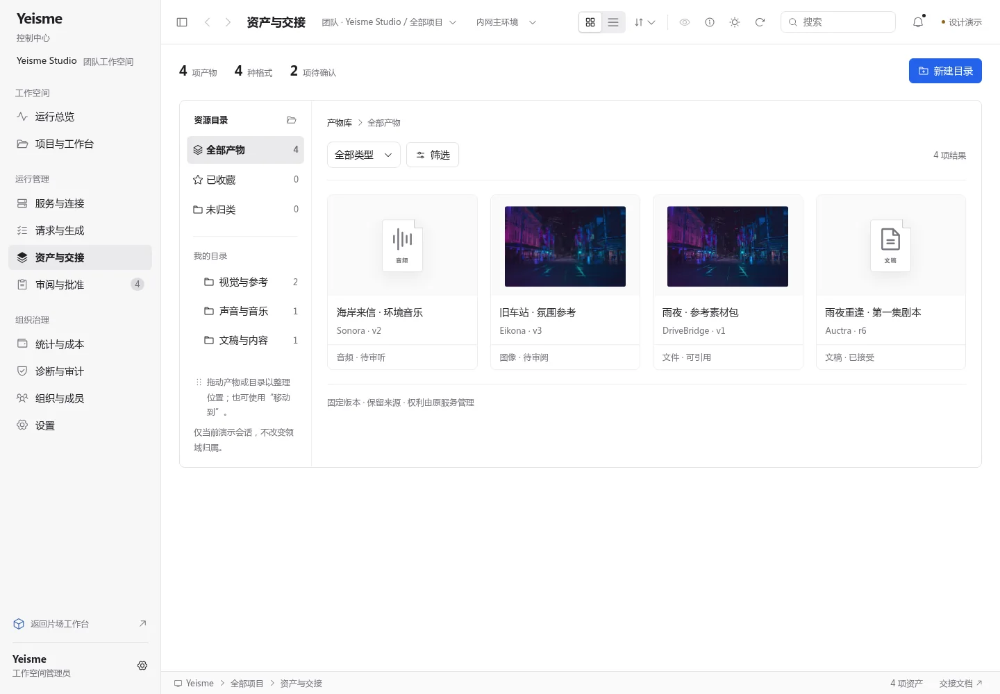
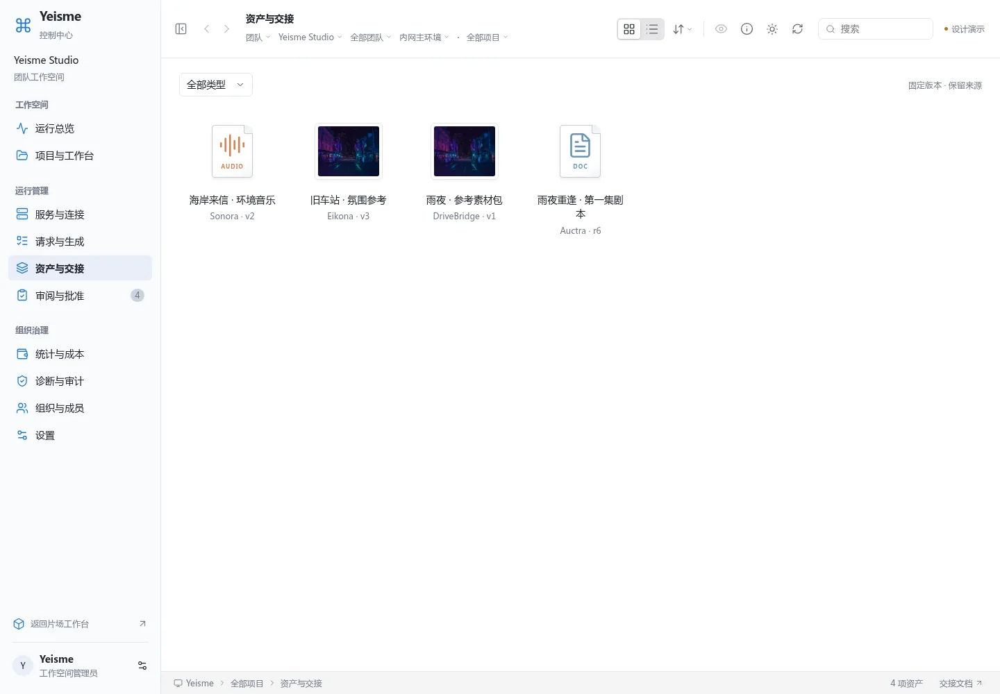
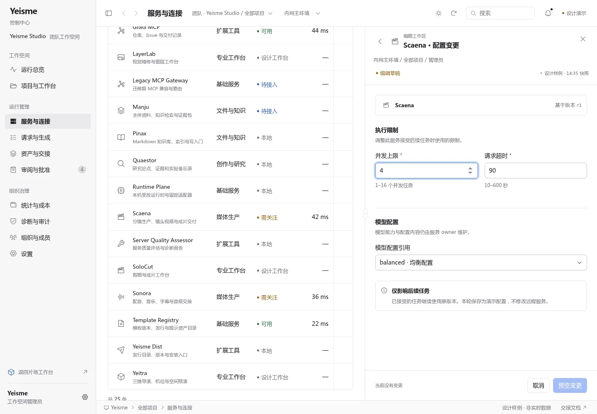
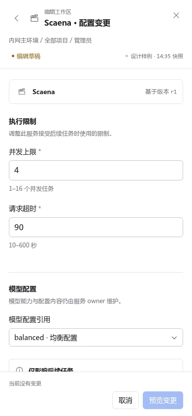
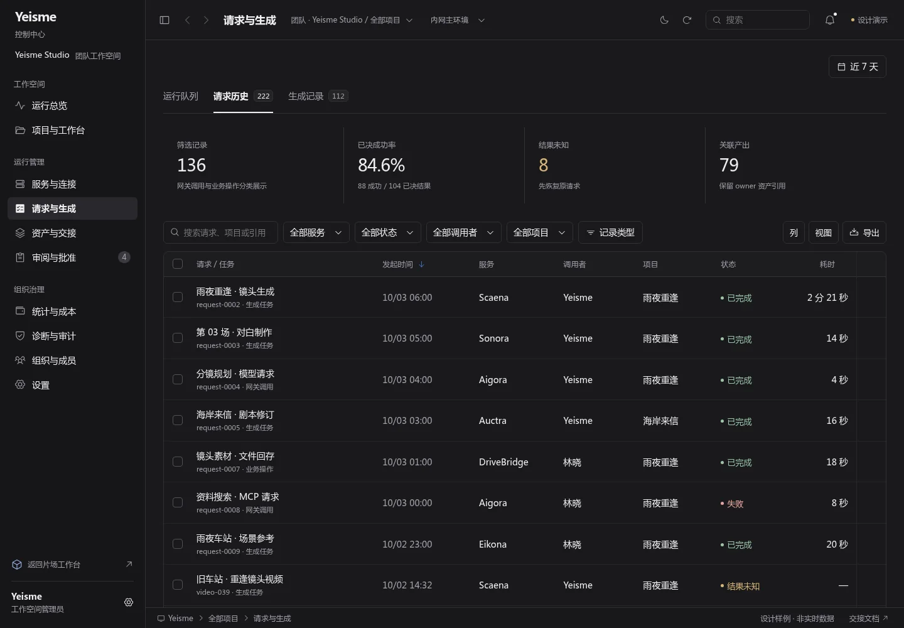

克制、精密的视觉重整
服务名称优先，图标辅助识别。统一中性层次、Phosphor 图标、范围选择与表格密度，保留原有业务交互。
01 · 单条请求也有清楚的层级
移除宣传标题、重复任务卡片和导出入口；仅在需要翻页时显示分页。


改造前本轮
02 · 以服务名称组织信息
取消彩底图标块，统一文字、状态色点与行操作。两张截图均为 1440 × 1000。


改造前本轮
03 · 保留资产整理能力
合并并发编辑留下的目录、备注、收藏、移动撤销和通知功能；图像保留原色，周边控件统一采用中性视觉。


改造前本轮
04 · 详情与表单共用同一工作区
保留字段校验、输入保护、影响预览与回执；窄屏进入全屏表单。


05 · 对应的炭灰深色层次
相同语义令牌、文字层级与交互，无额外装饰颜色。
